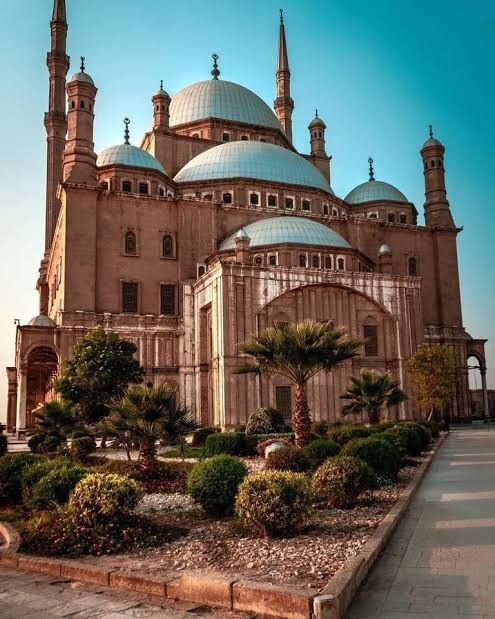

Saladin Citadel is one of the most important historical landmarks in Cairo. It was built by Sultan Saladin in the 12th century to protect the city from invasions. The citadel offers stunning views of Cairo and is home to several museums and the famous Mosque of Muhammad Ali, making it one of Egypt's most popular tourist attractions.